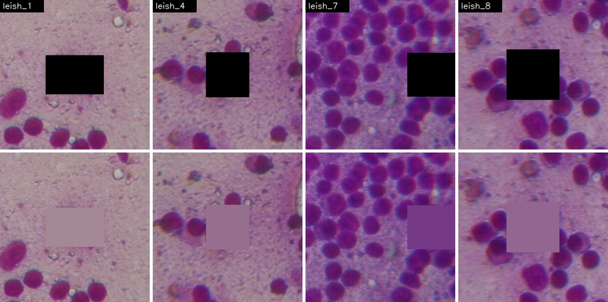

05_recortes_512_macrofago_cor_fundo
Gerado por: 01_preprocessamento/05_mascarar_macrofago_cor_fundo.ipynb
Origem: 02_recortes_512/
Usado em: exp13
Variação de 03_recortes_512_sem_macrofago/: a bbox de cada macrophage é apagada, mas preenchida com a cor mediana dos pixels fora dos macrófagos do próprio recorte, e não com preto. Assim a região apagada fica parecida com uma área vazia da lâmina, sem as bordas artificiais fortes do retângulo preto.
- As anotações são idênticas às de
03_recortes_512_sem_macrofago/(conferido arquivo a arquivo: 1.568 iguais). Também há 339 recortes com.txtvazio. - Se o recorte não tiver nenhum pixel fora dos macrófagos, usa a mediana do recorte inteiro.
- Em regiões muito densas (por exemplo, na
leish_7), a mediana do fundo fica próxima da cor das células, e o retângulo aparece mais escuro.
Exemplos

03_recortes_512_sem_macrofago). Embaixo: este dataset, com a área do macrófago preenchida pela cor mediana do fundo.Formato
leish_N/: uma subpasta por lâmina, com pares<nome>.png+<nome>.txt..txtno formato YOLO:classe xc yc w h(normalizados 0–1), uma caixa por linha.obj.names:0 Non-macrophages·1 macrophage·2 leishmania(alvo) ·3 inside-macrophage.
Visão geral de todos os datasets: ../README.html.